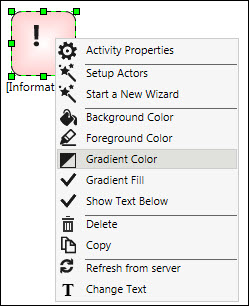
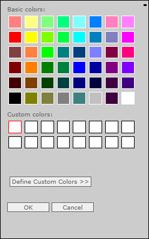
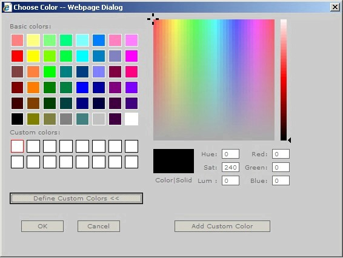

No
Set Appearance Properties for Activity Icons
You can change the appearance of activity icons using the appearance properties in the context menu.
- Right-click the icon of the activity for which you want to set appearance properties to open the context menu.
 - In the menu, select the "Background Color" option to open the Choose Color window shown below, where you can set the background color, that is fill color. You can select a color and click OK to set it as the background color. You can click Define Custom Color to expand the window to show the custom color definition controls. You can define a custom color and click Add Custom Color to add it to the palette.

Choose Color window with the Custom Color definition controls:
 - You can select "Foreground Color" to open the Choose Color window and set the foreground color, that is, outline color.
- You can select "Gradient Color" to set the gradient color in the Choose Color window.
- You can click "Gradient Fill" to enable gradient fill in the icon. A check mark before the option indicates that it is enabled.
- You can click "Show Text Below" to enable the display of the Activity Name and Description text below the icon. A check mark before the option indicates that it is enabled.